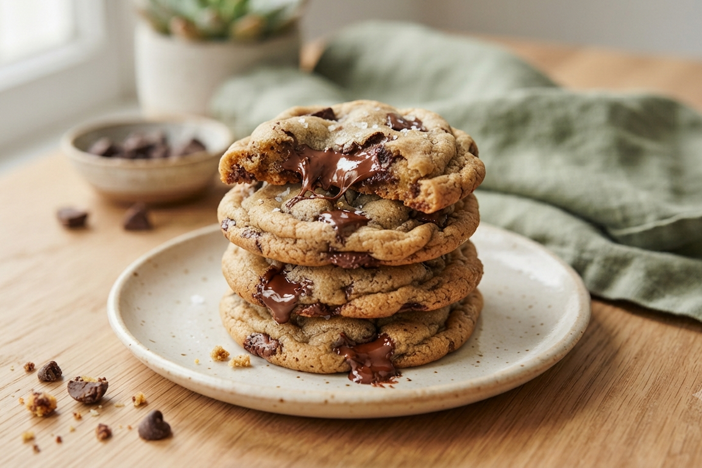

Cookies com Gotas de Chocolate
Prepare-se para se deliciar com os melhores cookies com gotas de chocolate que você já experimentou! Perfeitos pra acompanhar um café ou pra quando bater aquela vontade de um doce irresistível.
- Tempo de preparo: 40 minutos
- Rendimento: 22 unidades
- Dificuldade: Fácil
Ingredientes
Modo de Preparo
Dica: os cookies se espalham no forno enquanto crescem, então as bolinhas devem ser pequenas. Fique de olho pra não queimar por baixo.
Veja também: Torta de Limão